Primeira vitória visível
O aplicativo começa a existir
No capítulo anterior conhecemos a Santa Filomena Água & Gás. Agora vamos transformar a primeira parte daquela ideia em algo que já pode ser visto e alterado na tela.
1. Conhecendo o ambiente
Acesse snack.expo.dev. O Snack abre e executa um exemplo inicial mesmo sem login. Antes de programarmos, observe como a tela está organizada.
Na interface usada neste livro, temos três regiões principais:
- À esquerda: a estrutura do projeto, com arquivos e pastas como assets, components, App.js, package.json e README.md.
- No centro: o editor de código. É aqui que abriremos e alteraremos os arquivos.
- À direita: a pré-visualização do aplicativo. As alterações no código são refletidas automaticamente nessa área.
O Snack atribui automaticamente um nome temporário e aleatório ao projeto enquanto ele ainda não foi salvo. Esse nome pode mudar entre sessões e será substituído quando você salvar o projeto com o nome definitivo.
2. O Snack funciona sem login, mas não queremos perder o projeto
Observe a parte superior da tela. Antes do login, o Snack informa que é necessário entrar em uma conta para salvar as alterações durante o trabalho.
Isso significa que podemos experimentar o ambiente sem conta, mas nosso projeto do livro precisa ficar associado a uma conta para ser salvo e retomado depois.
Use o próprio link Log in mostrado pelo Snack ou o acesso de conta disponível na interface e conclua o login na Expo. Se ainda não tiver uma conta Expo, crie uma gratuitamente antes de continuar.
Entrar na conta não é a mesma coisa que salvar o projeto.
3. Depois do login, o ambiente continua o mesmo
Após o login, voltamos ao editor. A estrutura à esquerda, o código no centro e a execução à direita continuam ali. A diferença visível é que a conta passa a estar identificada no canto superior direito pelo avatar.
O projeto ainda pode aparecer como Not saved yet. Isso confirma que login e salvamento são etapas diferentes.
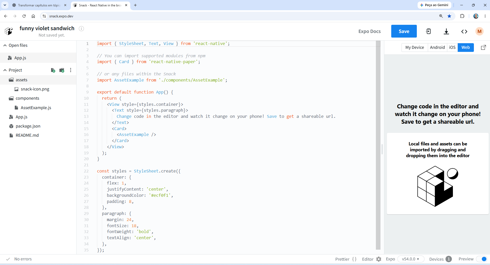
4. Onde ficam os projetos que já foram salvos?
Abra o menu do avatar e escolha My Snacks. Essa área reúne os projetos salvos na conta.
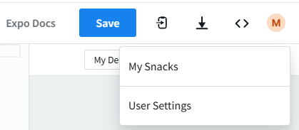
Se a conta ainda não tiver nenhum projeto salvo, a área Snacks aparecerá vazia e oferecerá Create a Snack. Em uma conta já utilizada, os projetos salvos aparecem nessa mesma área.
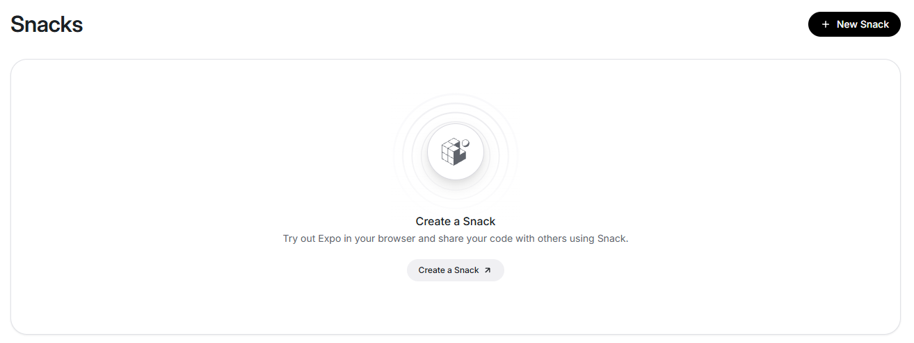
5. Salve o projeto pela primeira vez
Volte ao editor. Antes de alterar qualquer código, salve o projeto pela primeira vez:
- confirme que seu avatar aparece no canto superior direito;
- observe se o projeto ainda indica que não foi salvo;
- clique em Save.
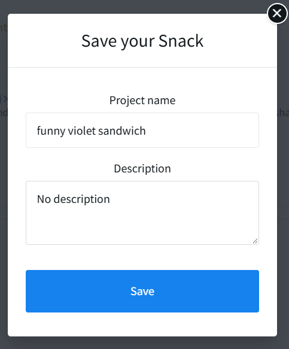
No campo Project name, use Santa Filomena Agua e Gas. O campo de nome aceita letras sem acento, números, espaços, hífen (-) e underscore (_). Caracteres como & e letras acentuadas não são aceitos nesse campo.
Na descrição, use: Aplicativo da Santa Filomena Água & Gás.
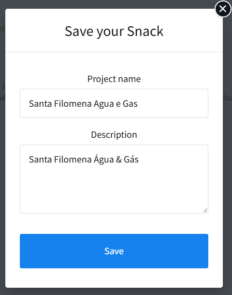
Clique em Save e aguarde a confirmação.
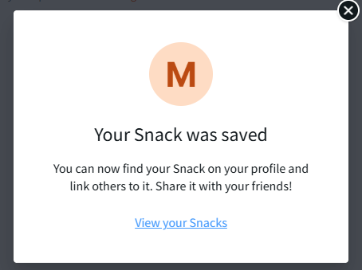
Use View your Snacks para conferir que o projeto passou a aparecer na conta.
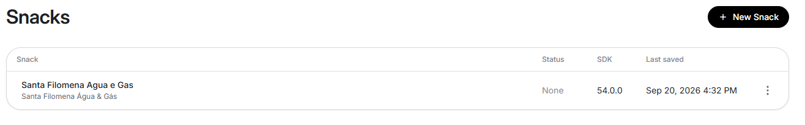
6. Primeiro contato com App.js
Na coluna da esquerda, localize App.js e abra o arquivo. O código aparece no editor central. Não tente compreender todas as linhas de uma vez.
Procure exatamente o texto principal exibido no exemplo:
Change code in the editor and watch it change on your phone!
Save to get a shareable url.Esse texto também aparece no preview. Vamos usá-lo para comprovar a relação entre código e resultado.
7. Faça sua primeira alteração
Substitua somente o texto localizado por:
Santa Filomena Água & GásNão altere Text, não apague as tags e não mexa em outras linhas. Assim que terminar, observe a área de execução à direita. O Snack atualiza a pré-visualização automaticamente.
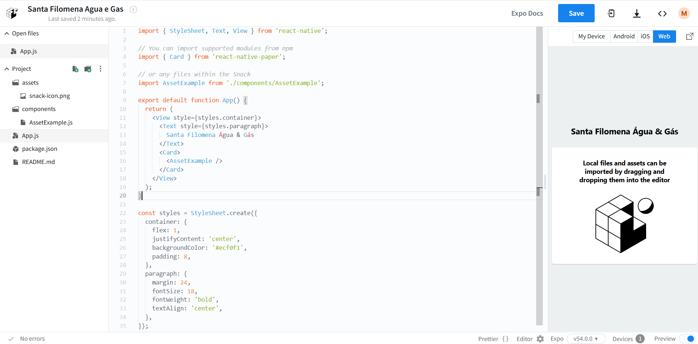
8. Experimente antes de continuar
Troque temporariamente o mesmo texto por Meu primeiro aplicativo. Observe o preview. Depois volte para Santa Filomena Água & Gás.
Essa experiência confirma três coisas: você sabe onde está o texto, consegue alterá-lo e consegue conferir o resultado. Depois do teste, mantenha novamente Santa Filomena Água & Gás antes de continuar.
9. Nem tudo da tela está em App.js
A pré-visualização também mostra uma imagem. Na coluna da esquerda, abra a pasta components e localize AssetExample.js.
Agora temos dois arquivos envolvidos na mesma interface. Por enquanto, basta perceber que um arquivo pode utilizar algo definido em outro.
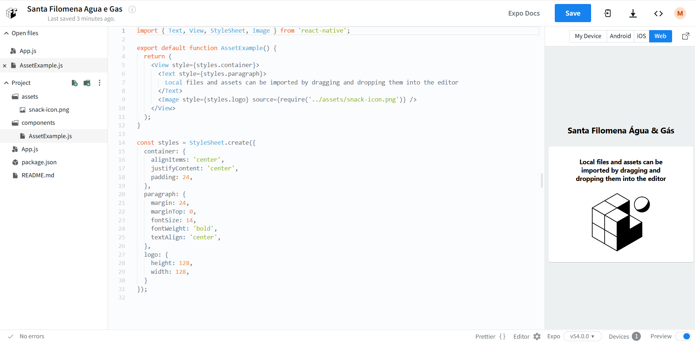
10. Nossa primeira imagem
Baixe o arquivo santa-filomena.png na página de apoio do livro no Mundo bit Byte. Não é necessário copiar icon ou splash-icon nesta etapa.
{kind=link}
No Snack, abra o menu Project e escolha Import files.
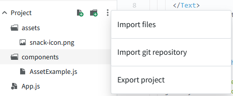
Ao importar pela interface web do Snack, o arquivo aparece inicialmente na raiz do projeto.
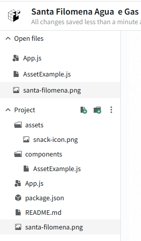
Arraste santa-filomena.png para a pasta assets. Confirme que o arquivo está dentro de assets antes de alterar o código.
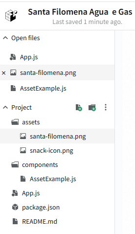
Abra AssetExample.js e altere apenas a referência da imagem para:
source={require('../assets/santa-filomena.png')}Nesta linha, require('../assets/santa-filomena.png') informa ao React Native qual arquivo local deve ser usado pela propriedade source da imagem. Os dois pontos ../ indicam que o código sai da pasta components, volta um nível e então entra na pasta assets.
Confirme no preview que a imagem da Santa Filomena substituiu a imagem padrão e que o Snack continua indicando No errors.
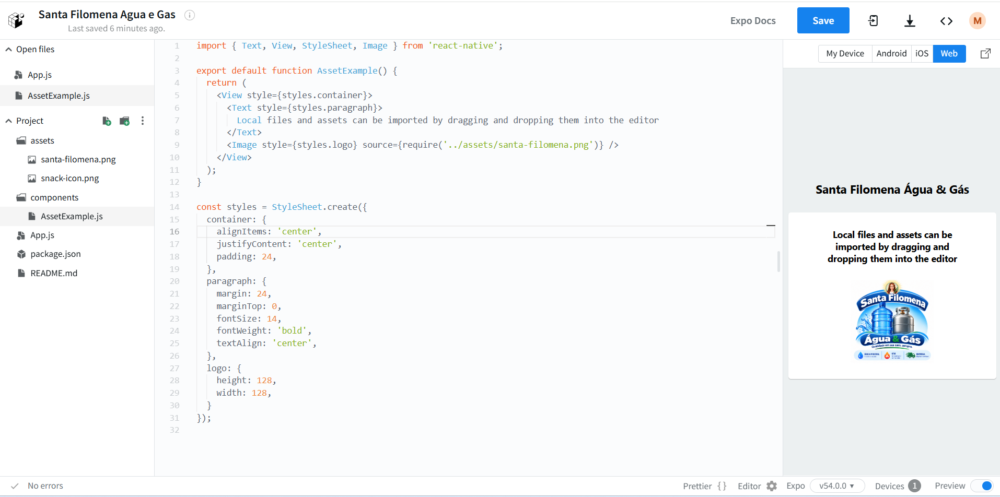
11. O exemplo começa a virar nosso aplicativo
Depois da troca do texto e da imagem, o projeto já deixou parte da identidade genérica do Snack. Temos, pela primeira vez, o nome Santa Filomena Água & Gás, uma imagem relacionada ao negócio e um projeto salvo que continuará nos próximos capítulos.
12. Um nome que deixa de fazer sentido
AssetExample.js veio do exemplo genérico. Agora ele representa a identidade da empresa. Vamos renomear o arquivo e limpar o que sobrou do exemplo padrão.
Para renomear um arquivo no Snack, abra o menu de três pontos verticais que aparece ao lado do item na árvore do projeto e escolha Rename. Esse menu também reúne outras ações e voltará a ser usado ao longo do projeto.
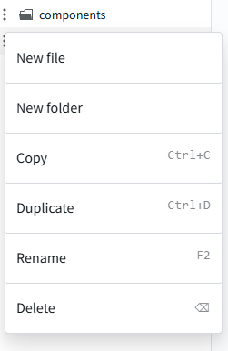
Faça as alterações abaixo, nesta ordem:
- renomeie AssetExample.js para IdentidadeEmpresa.js;
- no arquivo renomeado, troque o nome da função AssetExample por IdentidadeEmpresa;
- apague o bloco Text que contém a mensagem padrão Local files and assets can be imported by dragging and dropping them into the editor;
- remova Text da importação de react-native;
- apague todo o estilo paragraph de IdentidadeEmpresa.js;
- em App.js, troque o import de AssetExample pelo import de IdentidadeEmpresa;
- em App.js, troque
<AssetExample />por<IdentidadeEmpresa />.
Não apague apenas o texto visível. Remova também Text da importação e o estilo paragraph para não deixar código sem uso no componente.
Em App.js, o import torna IdentidadeEmpresa disponível. Já <IdentidadeEmpresa /> usa o componente no JSX e faz sua interface aparecer naquele ponto. A barra / antes de > fecha a marca na mesma linha.
Ao final, IdentidadeEmpresa.js deve ficar sem referências a Text ou paragraph e continuar apontando para santa-filomena.png.
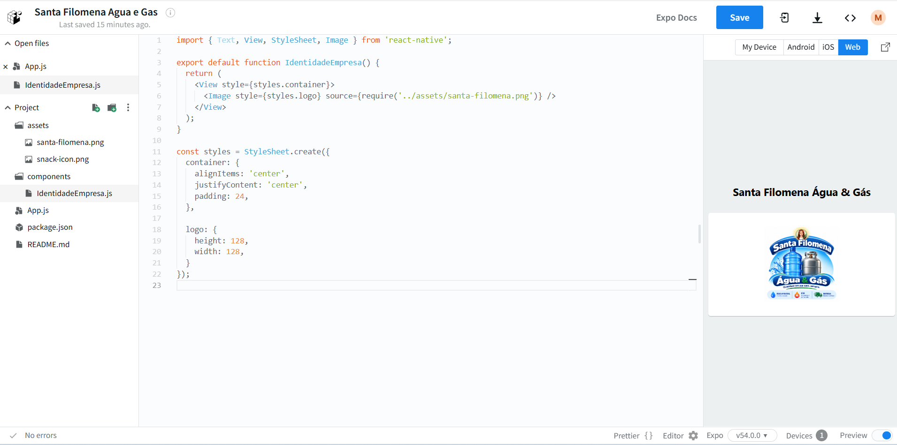
Agora confira App.js. O import e o uso do componente devem apontar para IdentidadeEmpresa.
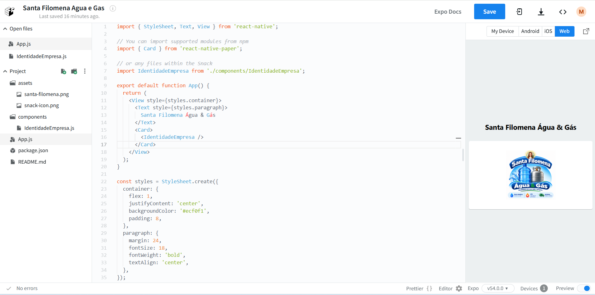
13. Limpeza final dos assets
Depois de confirmar que IdentidadeEmpresa.js usa santa-filomena.png e que o preview funciona sem erros, remova a imagem padrão snack-icon.png.
- na pasta assets, abra o menu de três pontos de snack-icon.png;
- escolha Delete;
- confirme que santa-filomena.png permanece em assets;
- confira novamente o preview;
- confirme No errors.
Remova snack-icon.png somente depois de confirmar que ele não está mais sendo usado pelo componente.
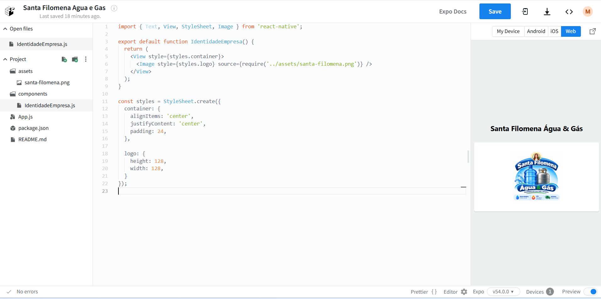
14. O que ainda não vamos reorganizar
As pastas assets e components continuarão com esses nomes por enquanto. Nossa intenção é usar português nos nomes que pertencem ao nosso projeto, mas só faremos essa reorganização quando houver uma necessidade pedagógica clara para isso.
Assim evitamos ensinar várias mudanças de caminho logo no primeiro contato.
15. Confira antes de terminar o capítulo
16. O aplicativo começa a existir
Este estado forma o primeiro checkpoint oficial do percurso. Ele serve para comparar, recuperar ou retomar o projeto — nunca para substituir a construção realizada durante o capítulo.
O checkpoint contém App.js, components/IdentidadeEmpresa.js e assets/santa-filomena.png, sem snack-icon.png.
App.js completo
import { StyleSheet, Text, View } from 'react-native';
import { Card } from 'react-native-paper';
import IdentidadeEmpresa from './components/IdentidadeEmpresa';
export default function App() {
return (
<View style={styles.container}>
<Text style={styles.paragraph}>Santa Filomena Água & Gás</Text>
<Card>
<IdentidadeEmpresa />
</Card>
</View>
);
}
const styles = StyleSheet.create({
container: {
flex: 1,
justifyContent: 'center',
backgroundColor: '#ecf0f1',
padding: 8,
},
paragraph: {
margin: 24,
fontSize: 18,
fontWeight: 'bold',
textAlign: 'center',
},
});IdentidadeEmpresa.js completo
import { View, StyleSheet, Image } from 'react-native';
export default function IdentidadeEmpresa() {
return (
<View style={styles.container}>
<Image style={styles.logo} source={require('../assets/santa-filomena.png')} />
</View>
);
}
const styles = StyleSheet.create({
container: {
alignItems: 'center',
justifyContent: 'center',
padding: 24,
},
logo: {
height: 128,
width: 128,
},
});17. O que construímos?
Começamos observando um exemplo pronto. Depois aprendemos a localizar uma informação, alterar o código, acompanhar o resultado, salvar o projeto, importar um arquivo, organizar assets e transformar um componente genérico em uma parte real do nosso aplicativo.
No próximo capítulo, ele deixará de parecer apenas um exemplo adaptado e começará a ganhar uma interface realmente pensada para a Santa Filomena Água & Gás.
Checkpoint alcançado
Marque o capítulo neste dispositivo e avance para a construção da primeira interface própria.